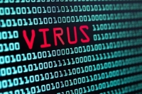

Les dangers
Les virus informatiques
Un virus informatique est un programme écrit dans le but de se propager sournoisement et rapidement à d'autres ordinateurs. Il perturbe plus ou moins gravement le fonctionnement de l'ordinateur infecté. Il peut se répandre à travers tout moyen d'échange de données numériques comme l'Internet, et notamment par l’intermédiaire des messages électroniques ou de leurs pièces attachées (source = altospam).
Le phishing
consiste à piéger les gens en cliquant sur des liens malveillants et dangereux. Les cybercriminels peuvent utiliser cette technique pour recueillir des renseignements personnels au sujet d'une personne et, plus tard, les faire chanter pour qu'ils fassent quelque chose d'illégal ou leur demander de l'argent (source = spyzie).
Les spams
Le spam est une technique de prospection consistant à diffuser massivement par courrier électronique des informations, souvent de nature publicitaire, non sollicitées par les internautes destinataires (source = altospam).
Vol de renseignements personnels
Tout ce que vous postez sur les réseaux sociaux est permanent et contrairement à une lettre, il ne peut pas être déchiré ou brûlé. Les jeunes d'aujourd'hui ne comprennent pas les dommages qu'une photo ou un message qu'ils ont téléchargé sur les réseaux sociaux peut affecter leur vie à l'avenir. De plus, si votre compte social est piraté, le pirate peut connaître toutes vos informations personnelles et vous harceler. Si les données de votre banque ou de votre carte de crédit font l'objet d'une fuite, vous pouvez subir des dommages importants (source = spyzie).
Se protéger
- Avoir un mot de passe très compliqué ou le changer régulièrement
- Sauvegarder régulièrement vos données importantes sur des supports externes types clés USB ou disques durs externes en cas d’infection par un virus malgré la présence de votre antivirus.
- Un logiciel anti-virus régulièrement mis à jour et une analyse régulière de l'ordinateur
- Une barrière de protection dite "fire-wall". Ces logiciels empêchent les intrustions dans votre ordinateur sans votre consentement.
- Mettre à jour régulièrement les logiciels que vous utilisez.
- Vérifier lors de l'achat l'apparition sur le navigateur d'un cadenas fermé et d'une adresse sécurisée du type "https".
- Contrôler pour les nouveaux sites leur SIRET au registre du commerce.
- Ne pas cliquer sur des liens reçus par courriel surtout si c'est pour vous demandez vos coordonnées bancaires (aucun organisme de paiement ne vous demandera cela)